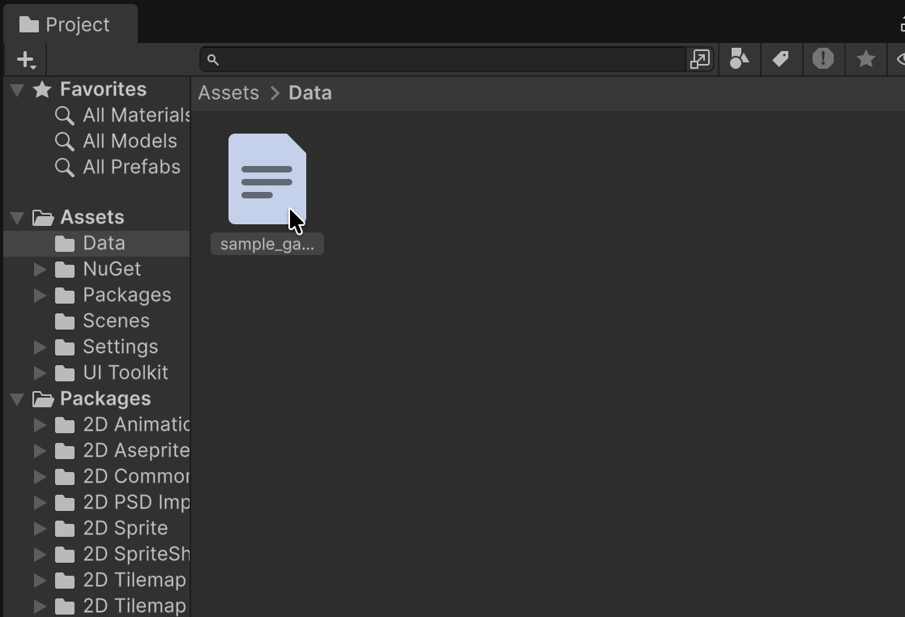
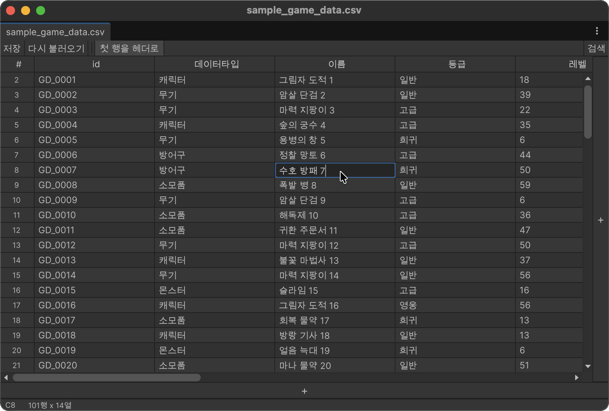
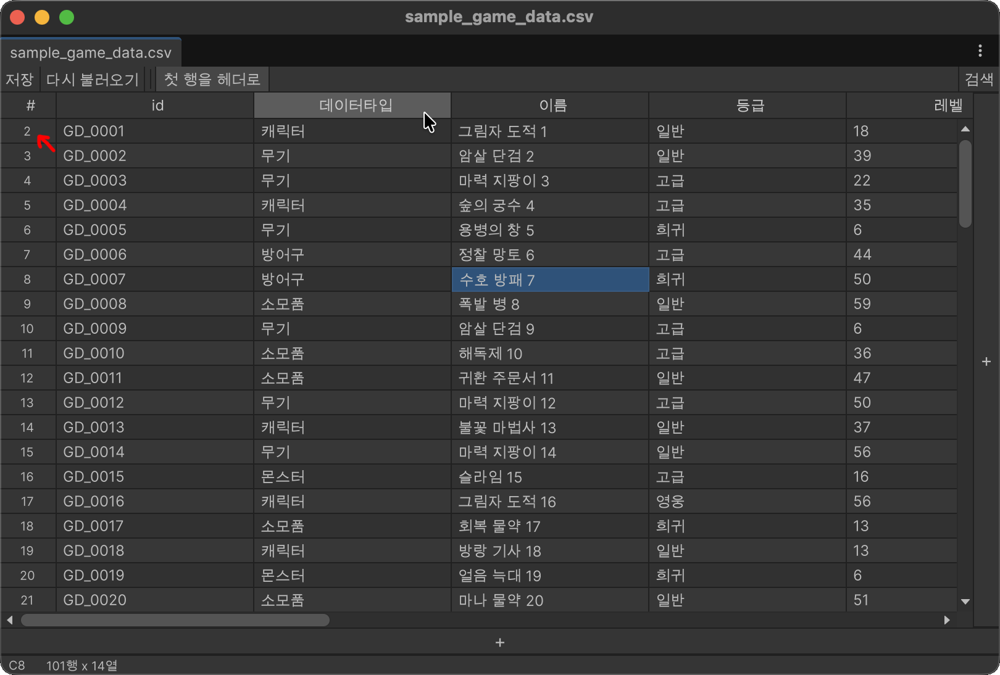

시작하기
표 열기
Project 창에서 .csv 또는 .tsv 에셋을 더블클릭합니다.

Tabular Editor는 에셋마다 창 하나를 열며, 같은 파일을 다시 더블클릭하면 기존 창에 포커스를 줍니다.

편집하고 저장하기
- 셀을 클릭해 활성화합니다.
- 바로 타이핑해 값을 바꾸거나 F2 또는 더블클릭으로 기존 값을 편집합니다.
- Enter로 확정하고 아래로 이동하거나 Tab으로 확정하고 오른쪽으로 이동합니다.
- Windows/Linux에서는 Ctrl+S, macOS에서는 Cmd+S로 저장합니다.
저장되지 않은 변경이 있으면 창 제목에 *가 붙고 상태 표시줄에도 저장되지 않은 상태가 나타납니다.

첫 행을 열 제목으로 사용
첫 행을 헤더로는 기본적으로 켜져 있습니다. 첫 행의 값이 열 제목으로 표시되고 일반 편집 및 검색 대상에서는 제외됩니다. 첫 행이 일반 데이터라면 툴바 토글을 끄세요. 열 제목은 A, B, C 같은 스프레드시트 이름으로 바뀝니다.
